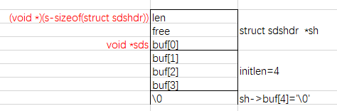
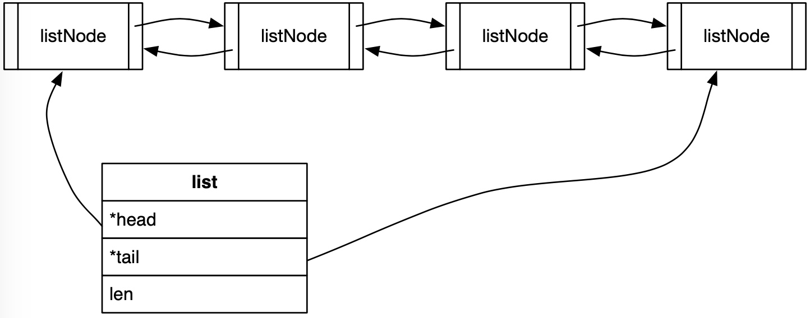
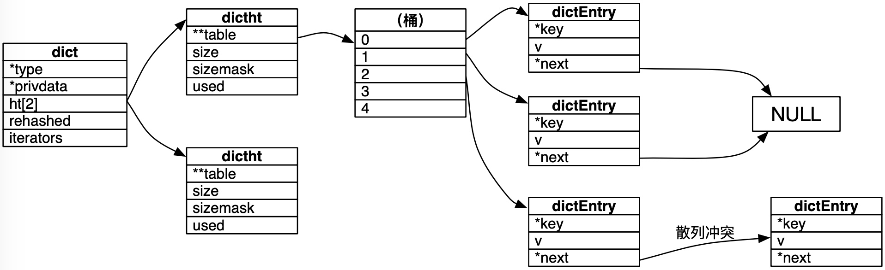
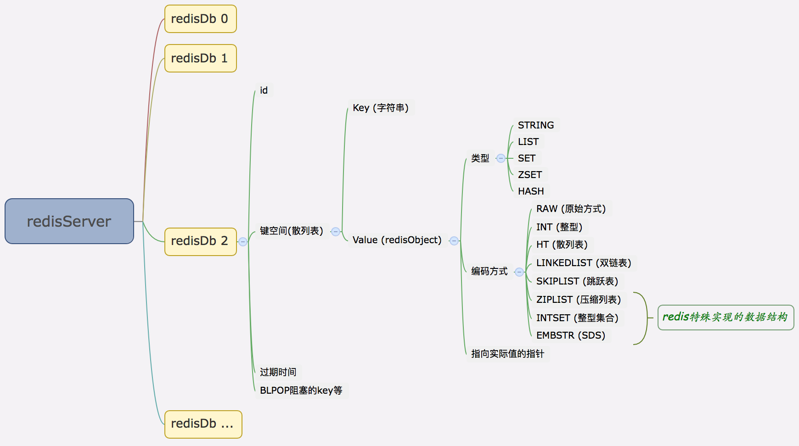
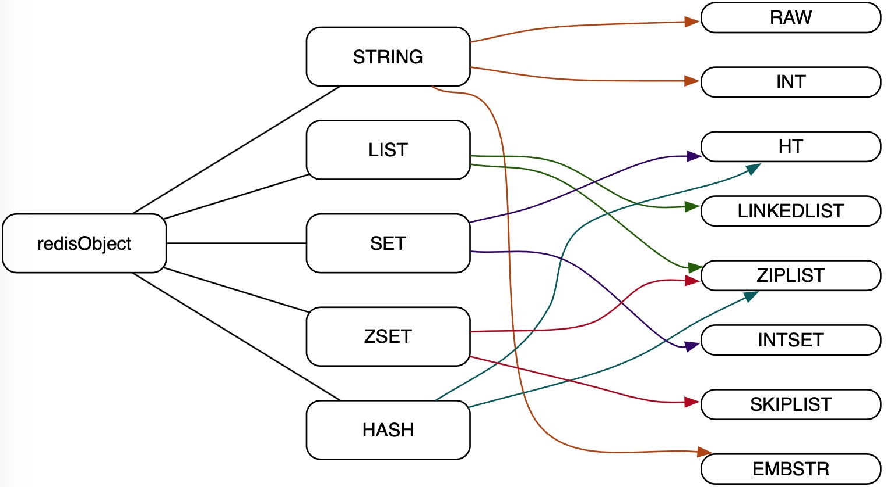

简单动态字符串（SDS）
Redis 底层使用 SDS (Simple Dynamic Strings) 作为字符串类型的存储方式之一，其结构非常简单，直接看源码即可了解个大概：
typedef char *sds;struct sdshdr {unsigned int len;unsigned int free;char buf[];};
其中，结构体 sdshdr 中的 len 用来存储字符串的实际长度，free 用来存储预留空间的长度，buf 用来存储字符串内容。
与一般动态字符串直接使用结构体表示字符串的实现方式不同，sds 仍使用 char* 表示字符串，只是其指向的位置略微特殊而已。通过创建 sds 的函数，可以看出这种特殊性：
sds sdsnewlen(const void *init, size_t initlen) {struct sdshdr *sh;if (init) {sh = zmalloc(sizeof(struct sdshdr)+initlen+1);} else {sh = zcalloc(sizeof(struct sdshdr)+initlen+1);}if (sh == NULL) return NULL;sh->len = initlen;sh->free = 0;if (initlen && init)memcpy(sh->buf, init, initlen);sh->buf[initlen] = '\0';return (char*)sh->buf;}
通过源代码了解到，实际存储字符串相关信息的仍然是 struct （sdshdr），sds 其实是返回指向其 buf 数组的首个元素的指针。借用 redis 作者的描述：
+--------+-------------------------------+-----------+
| Header | Binary safe C alike string... | Null term |
+--------+-------------------------------+-----------+
|
`-> Pointer returned to the user.
另外值得注意的是，通过：
sh->len = initlen;sh->free = 0;
可以看出，redis 在首次创建字符串时并不会额外分配 free 空间，而是按字符串实际的大小申请内存空间来创建，这和 Java 中 StringBuffer 等预先分配一定容量(通常16char)的策略是不同的。
sds 是二进制安全的，字符串中间可以包含 \0 。获取 sds 的长度时通常不能直接使用 strlen 而是使用 sdslen 读取其 len 值：
static inline size_t sdslen(const sds s) {struct sdshdr *sh = (void*)(s-(sizeof(struct sdshdr)));return sh->len;}
唐老师给我画了一张图，可以帮助理解：

最后一个值得关注的问题是，sds 是如何扩容的？这一过程在 sdsMakeRoomFor 函数中实现：
sds sdsMakeRoomFor(sds s, size_t addlen) {struct sdshdr *sh, *newsh;size_t free = sdsavail(s);size_t len, newlen;if (free >= addlen) return s;len = sdslen(s);sh = (void*) (s-(sizeof(struct sdshdr)));newlen = (len+addlen);if (newlen < SDS_MAX_PREALLOC)newlen *= 2;elsenewlen += SDS_MAX_PREALLOC;newsh = zrealloc(sh, sizeof(struct sdshdr)+newlen+1);if (newsh == NULL) return NULL;newsh->free = newlen - len;return newsh->buf;}
可以看到，当扩展后的长度比 SDS_MAX_PREALLOC 小时，预留一倍的容量；否则增加 SDS_MAX_PREALLOC 的容量。当前版本中：
#define SDS_MAX_PREALLOC (1024*1024)
理解了这些便很容易知道 redis APPEND 命令的实现细节：
$ SET foo bar$ APPEND foo blahblah
当然，这种预先分配容量的方式，虽然能减少内存分配的次数，提高 APPEND 操作的性能，但会造成一定的内存占用，而且此部分内存不会主动释放。
双链表
Redis 实现了通用的双链表作为其基础数据结构之一。双链表是 redis 列表类型的实际存储方式之一，同时双链表还被其它功能模块广泛使用。它由三部分组成：
- 节点
- 迭代器
- 链表自身
其节点如下：
typedef struct listNode {struct listNode *prev;struct listNode *next;void *value;} listNode;
包含指向前驱、后继节点的指针及当前节点存储的值。这个值的类型为 void* ，说明 redis 并不限制链表存储的数据类型。
链表的定义如下：
typedef struct list {listNode *head;listNode *tail;void *(*dup)(void *ptr);void (*free)(void *ptr);int (*match)(void *ptr, void *key);unsigned long len;} list;
list 中保存了指向表头和表尾的指针，因此在执行 LPUSH、RPUSH、RPOP 等命令时是非常快的(θ(1))；其中还保存了 len 值，因此 LLEN 命令的执行也是非常快的。

另外，它还保存了三个函数指针 dup、free 和 match 用来复制、释放和对比链表，这样做是因为节点值的类型是不确定的，具体的实现方法交由用户代码灵活扩展处理。比如如果用户定义了 match 函数的实现，则采用它来替换默认使用 == 的比较策略：
if (list->match) {if (list->match(node->value, key)) {listReleaseIterator(iter);return node;}} else {if (key == node->value) {listReleaseIterator(iter);return node;}}
类似地，释放一个链表时会优先调用指定的 free 函数后再完成其它释放过程：
void listRelease(list *list){unsigned long len;listNode *current, *next;current = list->head;len = list->len;while(len--) {next = current->next;if (list->free) list->free(current->value);zfree(current);current = next;}zfree(list);}
迭代器的结构如下：
typedef struct listIter {listNode *next;int direction;} listIter;
其中，direction 可以向前或向后：
#define AL_START_HEAD 0#define AL_START_TAIL 1
可以通过：
listIter *listGetIterator(list *list, int direction);
获得迭代器，通过：
listNode *listNext(listIter *iter);
进行遍历。另外，还可以将指针移到表头或表尾：
void listRewind(list *list, listIter *li);void listRewindTail(list *list, listIter *li);
散列表
散列表是 redis 中的基础数据结构之一， redis 中的键空间、redisDB、 SET、ZSET、集群节点映射等，都是通过散列表实现的。结构体定义为：
typedef struct dict {dictType *type;void *privdata;dictht ht[2];long rehashidx;int iterators;} dict;
其中，*type 指针指向 dict 的类型，例如它是一个 ZSET(zsetDictType) 还是一个集群节点(clusterNodesDictType)。实际上它们的存储结构是相同的，之所以区分类型，是因为其散列函数、key 的比较(或销毁)策略是不同的。因而所谓的 dict 类型，不过是一组函数指针罢了：
typedef struct dictType {unsigned int (*hashFunction)(const void *key); // 散列函数void *(*keyDup)(void *privdata, const void *key); // key 复制函数void *(*valDup)(void *privdata, const void *obj); // value 复制函数int (*keyCompare)(void *privdata, const void *key1, const void *key2); // key 比较函数void (*keyDestructor)(void *privdata, void *key); // key 销毁函数void (*valDestructor)(void *privdata, void *obj); // value 销毁函数} dictType;
数组 ht 中存放的是 dict 的实际散列表结构 dictht ：
typedef struct dictht {dictEntry **table;unsigned long size;unsigned long sizemask;unsigned long used;} dictht;
之所以存放 2 个，是为了实现渐进式再散列(incremental rehashing)。
**table 指向桶结构 dictEntry :
typedef struct dictEntry {void *key;union {void *val;uint64_t u64;int64_t s64;double d;} v;struct dictEntry *next;} dictEntry;
当发生冲突时，dict 首先会使用分离链接法将散列到同一个值的所有元素保留到一个表中。当到了一定时机，它会通过再散列进行扩展。

Redis 还提供了遍历散列表用的迭代器，它支持安全(遍历期间可以增加元素等操作)、不安全两种方式遍历散列表：
typedef struct dictIterator {dict *d;long index;int table, safe;dictEntry *entry, *nextEntry;long long fingerprint;} dictIterator;
todo 渐进式再散列
数据存储结构关系
总起来看，redis 的数据存储结构大致是这样的：

它使用全局变量 server 来存储服务器信息：
struct redisServer server;
其中 redisServer 包含了数据存储结构、事件、集群、持久化等诸多信息，和数据存储结构相关的定义如下：
struct redisServer {redisDb *db;int dbnum;// ... 等等等};
由此可见 redis 服务是由 redis 数据库(redisDb)构成的。redisServer 中存储了 redisDb 数组，其初始化大小可配置：
# Set the number of databases. The default database is DB 0, you can select# a different one on a per-connection basis using SELECT <dbid> where# dbid is a number between 0 and 'databases'-1databases 16
默认值为 16 :
#define REDIS_DEFAULT_DBNUM 16
server 在初始化的时候会对每一个数据库做初始化操作，因此配置时用不着的数据库尽量关闭：
...server.dbnum = REDIS_DEFAULT_DBNUM;...server.db = zmalloc(sizeof(redisDb)*server.dbnum);...for (j = 0; j < server.dbnum; j++) {server.db[j].dict = dictCreate(&dbDictType,NULL);server.db[j].expires = dictCreate(&keyptrDictType,NULL);server.db[j].blocking_keys = dictCreate(&keylistDictType,NULL);// ... 等等}
redisDb 的结构并不复杂：
typedef struct redisDb {dict *dict;int id;long long avg_ttl;// ... 等} redisDb;
其中 dict *dict 用来存储键值对数据。也就是说 SET foo bar 命令实际会将 foo 存入 dict 结构的 key 中。Redis 用来存储值的对象是 redisObject ，它是对 redis 不同数据类型的抽象：
typedef struct redisObject {unsigned type:4;unsigned encoding:4;void *ptr;// ... 等} robj;
其中 type 代表一个 redis 数据类型(抽象给用户使用的)，encoding 代表 redis 内部对该类型的实际编码方式(底层的数据结构实现)， *ptr 是指向实际值的指针。
redisObject 的类型为：
#define REDIS_STRING 0 /* 字符串 */#define REDIS_LIST 1 /* 列表 */#define REDIS_SET 2 /* 哈希 */#define REDIS_ZSET 3 /* 集合 */#define REDIS_HASH 4 /* 有序集合 */
编码方式有：
#define REDIS_ENCODING_RAW 0 /* 原始sds方式 */#define REDIS_ENCODING_INT 1 /* 整数 */#define REDIS_ENCODING_HT 2 /* 散列表 */#define REDIS_ENCODING_ZIPMAP 3 /* (已弃用) */#define REDIS_ENCODING_LINKEDLIST 4 /* 双链表 */#define REDIS_ENCODING_ZIPLIST 5 /* 压缩列表 */#define REDIS_ENCODING_INTSET 6 /* 整型集合 */#define REDIS_ENCODING_SKIPLIST 7 /* 跳跃表 */#define REDIS_ENCODING_EMBSTR 8 /* 内嵌式sds */
通常一个 redis 的对象类型都会对应两个以上的编码方式，它们的详细对应关系为：

命令示例：
$ SET foo abc$ OBJECT ENCODING foo"embstr"$ SET bar abcdefghijklmnopqrstuvwxyzabcdefghijklmnopqrstuvwxyz$ OBJECT ENCODING bar"raw"$ SET foobar 123$ OBJECT ENCODING foobar"int"$ SET foobar 12345678901234567890$ OBJECT ENCODING foobar"embstr"$ SET foobar 1.0$ OBJECT ENCODING foobar"embstr"
(使用的源码基于 redis 3.0.5)
@ssbunny 2015-12